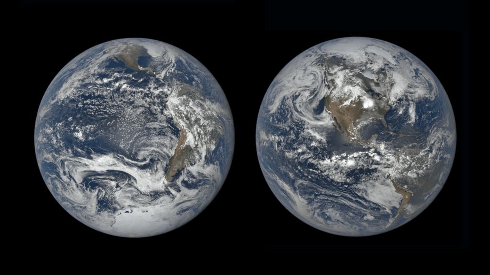
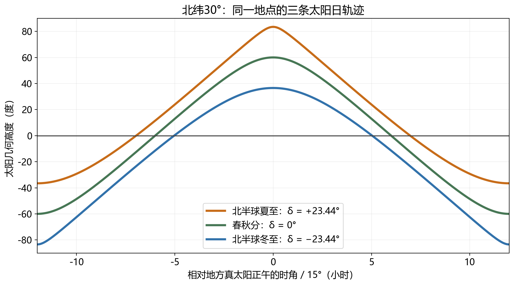
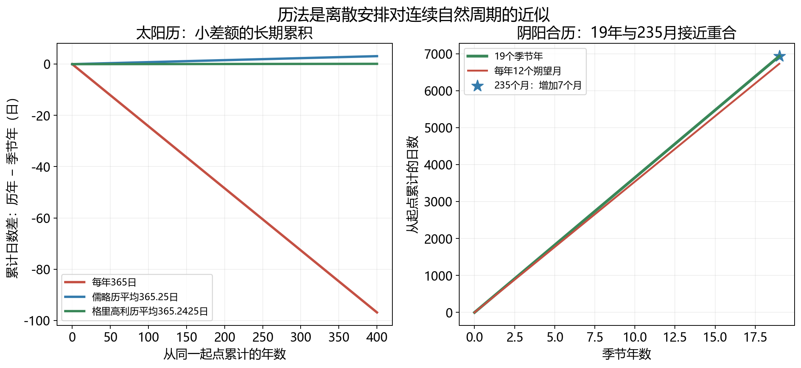

同样是约定下一次见面的日期，“明年今天”和“十二个月以后”却不一定指向相同的天文状态。公历生日大体停留在同一季节，农历生日在公历中来回移动，伊斯兰历的斋月则会经过炎夏与寒冬。看起来都是十二个月，背后的安排却不同。历法最难的地方，是自然没有替人类准备一组能够整除的时间单位：地球自转、季节循环与月相循环各自进行，我们必须决定让日历优先跟随哪一种变化。历法与自然周期
这不只是给数字加上“闰”的问题。要知道一年应该跟随什么，必须先解释季节；要知道一天从哪里开始，必须分清地球转了一圈与太阳回到同一方向；要读懂“七月流火”，还要理解星空怎样成为一只季节钟。日历上的整数，是这些连续天体运动与社会生活之间的一种协议。
地球轨道是一条接近圆形的椭圆，现在通常在一月初经过近日点，在七月初经过远日点。对于北半球，这恰好与“近则夏、远则冬”的想象相反。南北半球同时处在几乎一样的日地距离，却具有相反的季节，更直接说明距离不能独自解释四季。地球距太阳的变化确实影响能量输入，只是在今天地球的季节问题里，关键结构是地轴相对于公转轨道面法线倾斜约23.4°。轨道与季节
一年之内，地轴在遥远恒星背景中的方向近似保持不变。地球绕太阳移动，便会轮流让北半球或南半球更倾向太阳。这不是地球每隔半年主动把身体扭向太阳，而是同一根大致平行的轴，随地球来到轨道的不同位置。六月附近，北极一端偏向太阳；十二月附近，南极一端偏向太阳。轴倾与位置共同改变了阳光在两半球之间的分配。
这种分配有两个可观察的后果。首先，夏季太阳在天空中通常更高。同一束截面积固定的阳光，垂直落在地面时集中在较小面积，斜着落下时摊得更开。若太阳高度为 ，暂时忽略大气与地表坡度，水平面每单位面积收到的直射能量正比于 。太阳高度从30°升至60°，这个几何因子从0.5变成约0.87。距离没有改变，单位面积的入射功率却显著增加。
其次，太阳在地平线上方停留的时间更长。同样的当地纬度，太阳的日行轨迹在夏季有更多部分露在地平线上方。正午更高与白昼更长一起增加一天的日照总量。不要用一个正午角度代替全天能量，也不要用一个太阳能量数字直接代替实际气温：云、大气吸收、海洋与陆地的储热、风和洋流，都能重新分配能量。最热时段通常晚于日照最强的时段，正像烧水时火力最大与水温最高不必同时出现。

图1：NASA/DSCOVR EPIC，左为2018年十二月至日前后，右为2019年六月至日前后，原图未裁切。两幅图从近太阳方向观察地球；大陆可见位置的改变表现出不同半球朝向太阳的变化。它们是经过处理组合的观测影像，不能据这两张图认定地轴在恒星背景中半年摆动一次。原页与使用条件见素材记录。
描述太阳南北方向的位置，可以用赤纬 ：以地球赤道面延伸到天空形成的天赤道为零，向北为正，向南为负。暂时把地球近似为球体，在纬度 的地方，太阳上中天时的几何高度为
“上中天”是太阳经过当地子午圈较高一侧的时刻；子午圈经过天顶以及地平线南北点，不必把它与钟表12:00等同。北纬30°处，春秋分的太阳赤纬接近零，正午高度约60°；夏至赤纬约+23.44°，高度约83.44°；冬至赤纬约−23.44°，高度约36.56°。三个数把抽象的地轴倾斜转成了楼房投影、太阳能板受光和户外阴影长度的差别。太阳位置的角度与近似
若还想知道白昼有多长，可以求太阳中心恰好位于几何地平线时的时角 。时角表示天体偏离当地子午圈的角距离，太阳在上中天时为零。球面几何给出 ；在普通存在日出日落的情形下，几何白昼长度约为 小时。分母来自平均每小时约转过15°，而不是来自太阳在空间飞行的速度。
在同样的北纬30°，这个模型给出夏至约13.93小时、冬至约10.07小时，春秋分为12小时。实际日出日落使用太阳上边缘，并受大气折射影响，因此观测白昼通常略长于这条几何结果。极区还会出现公式右边超出余弦可取范围的情况：那不是计算器坏了，而是在告诉我们太阳全天不落，或全天不升。轴倾越大，南北日照分配的季节变化就越强。升落的定义

图2：按球面几何计算的太阳高度，横轴以地方真太阳正午为零；地球球形、赤纬在一天内固定，不含折射、地形遮挡及天气。与零高度线的两个交点给几何升落时角。阴影和能量分析可以使用这组曲线，精确活动时刻须另查历表。保留SVG与绘图源。
这套几何还能解释回归线与极圈。太阳能直射的最北纬度约为+23.4°，最南约为−23.4°，于是有两条回归线；从约66.6°纬度往极地方向，至日前后可能出现极昼或极夜，于是有极圈。地理课上看似互不相干的几条纬线，实际共享同一个天文参数。至于“立春以后每个地方立刻温暖”，则不能由这些角度推出：节气给定太阳的季节位置，地方气候另有自己的响应。
地球相对于遥远恒星方向转一圈，约需23小时56分4秒；日常使用的平均太阳日则约为24小时。差别来自地球公转：地球自转一圈期间，它在绕日轨道上向前走了一点，太阳方向在恒星背景中平均向东移动约1°。地面需要再向东转一小段，太阳才重新回到当地子午圈。与月球的恒星月、朔望月一样，“一圈”的终点要由参照对象决定。恒星日与太阳日
用匀速、顺向、同一参照的近似，记恒星日为 、太阳日为 、地球恒星年为 ，有 。换个更直观的计数方式：在地球绕日一圈中，地球相对于恒星多转了一圈，而相对于太阳少完成一次方向返回。因此一颗星每天比前一天约提前四分钟经过子午圈，累积一个月约两小时。这是夜空季节变化的关键，也说明“每天同一钟表时刻”与“每天同一恒星时刻”不是同一个观察条件。
真实太阳还不是一只完全均匀的钟。地球在椭圆轨道上运行速度变化，太阳的周年路径黄道又倾斜于天赤道，沿黄道的角运动并不等同沿赤道的均匀变化。用日晷记录的地方真太阳时，与抹平这些变化的地方平太阳时之间有差额，称为均时差。它一年中有正有负，累计可以达到十几分钟；不是把“恒星日少四分钟”继续加下去。前者比较恒星与太阳的周期，后者比较真实太阳与一个数学上均匀运行的平均太阳。均时差
钟表时间还要加上另一层社会约定：经度不同，地方正午就不同，但同一时区为了交通和生活共用时间。杭州靠近东经120°的UTC+8时区参考经线；若把同一钟表带到东经90°，太阳经过当地子午圈的时间相对钟表便晚约两小时，因为相差30°。所以“正午影子最短”主要说地方太阳经过子午圈，而不是任何地方钟表指针都指向12。精密授时还涉及原子秒与地球自转测量；闰秒也与调整季节日历的闰日不同，不需要把它们塞进同一条置闰规则。
“地球绕太阳一圈约365.24日”很适合初步估算，却把两个问题藏在一起：它绕行了多久，何时算返回？若把远方恒星背景当作近似固定方向，地球相对于这个背景完成一圈，是恒星年，约365.256日。若关心春夏秋冬再次出现，则应追踪太阳相对于季节基准的返回，得到回归年，其常用现代平均近似约365.2422日。两者相差约二十分钟。几种年的定义
差别主要来自地轴方向缓慢改变。地球赤道面与轨道面的交线给出春分方向，这个基准也在恒星背景中缓慢移动；太阳不用相对恒星走满原来的角距离，就能再次追上移动的季节零点。我们为了让六月仍留在相近的日照状态，应近似跟随回归年，而非强求太阳每个六月都面对完全相同的远处恒星。这里已经能看见岁差的作用，却不需要马上推算数万年的轴向演化。
还有近点年：地球从一次近日点到下一次近日点的平均周期，约365.260日。它又略长，是因为轨道近日点的方向也会改变。三种年不是三份相互矛盾的观测，而是在问三个不同的返回条件。天文学里的“周期”从来不只是一个数字，定义和参照物也是这个数字的一部分。它们的长度还会随年代与所用平均方法改变；具体春分到下一次春分的间隔，也不必每次恰好等于一个平均回归年。
因此365.2422日应写作当前教学所用的近似，不能叫作宇宙永远精确到四位小数的常数。这个分寸不妨碍做历法计算：公历需要的是在很长但有限的社会时间尺度上贴近季节，不是给整个地球未来历史规定一个永不修改的齿轮比。
一年只能在日历中安排整数个日期，季节周期却有小数。如果一律每年365日，日历年比回归年平均短约0.2422日，四年便落后近一天，百年近24天。此时同名日期会逐渐落到更早的季节位置。儒略历采用四年增加一日的方法，平均年长成为365.25日，大幅改善了问题。但它又比365.2422日长约0.0078日，也就是每年约11分钟；400年积累约3.12日。一个人不易察觉的小偏差，长期制度却不能忽略。两种太阳历的闰年规则
格里高利历在四年一闰之上，再规定整百年份一般不闰，能被400整除的整百年份仍闰。于是400年里有97个闰年，平均年长为 日。2000年能被400整除，是闰年；1900年与2100年只有整百条件，不是闰年。规则看似绕了一圈，本质却很清楚：400年删去儒略规则里多出的三天。
与采用的平均回归年近似相比，公历平均仍长约0.0003日，约26秒。如果把两个周期都当常数，约三千多年积累一日。这是量级估算，不是精确预言公历将在哪一年失效，因为回归年会变，民用历法也可能修订。太阳历的目标是把季节漂移保持很小，并没有承诺月初一定是新月。公历仍有“月”，只是这个名字保留了历史来源，不代表今天十二个月各自追踪真实月相。

图3：左图用固定365.2422日作季节年参照，显示三种平均历年长度的差额；右图比较19个季节年、每年12个月及235个朔望月。模型只说明累积与近似，不能据直线给某年的春分时刻或闰月月份。采用29.5306日的平均朔望月。保留SVG。
平均年长接近自然年，并不意味着每一年都精确相等。以365.2422日为季节年的固定近似，平年结束时，日历比季节周期少走约0.2422日；闰年则多走约0.7578日。如果连过三个平年，再补一个闰年，前三年的落后与第四年的补偿大致抵消。看累计误差曲线，真实日历会像台阶或锯齿：一年一年积欠小数日，某年突然补回一整日。图3的平均年曲线只显示长期趋势，不能用它判断某一年春分恰好发生在几时几分。
这样安排有一层很重要的意思：我们不必让每年长度都相同，才能让同一日期大体待在同一季节。需要控制的是累计偏差。在整数日期制度下，理想季节时刻可以在几个相邻日期间来回移动；如果偏差持续向同一方向累积，几百年以后才会显著改变日期与季节的对应。闰日解决后一种漂移，接受前一种小幅摆动。四年规则偶尔跳过百年，四百年再补回，正是对这笔长期账目继续纠偏。
这还能解释为什么不能把闰日和闰秒混为一谈。闰日主要处理历年与季节年的比例；闰秒处理以原子秒计时的时间尺度与不完全均匀的地球自转之间的关系。一个关心公转季节怎样落在整数日上，另一个关心钟表秒与地球当日转角怎样协调。自转速度会受地球内部与大气、海洋等角动量交换影响，所以不能用“每四年一次”来推算闰秒。具体民用时间制度还会随国际约定调整，不能把任何历史实施规则当成天体永久写好的安排。原子时间与地球自转
一轮月相平均约29.5306日。若十二轮构成一年，总长约354.3672日，比季节年短约10.875日。太阴历优先维持月份与月相的关系，不再加闰月把一年锁住季节。于是某个同名日期每过一年，相对于季节年平均提前约十一日；连续多年以后，原先在冬季的节日会来到秋季、夏季，再走完一整轮。自然运动是有规律的，季节漂移同样有规律，不是日期安排随机。太阴与阴阳合历
这也说明，历法类别没有天然的优劣排名。若一个文化主要希望每个月起点与月亮保持联系，季节漂移可以是被接受的设计结果。太阳历放弃逐月跟随月相，纯太阴历放弃固定季节，两者分别做了选择。只有当我们要求同时保住两个条件时，才需要更复杂的制度。
中国农历正是阴阳合历：月份与朔相连，同时用闰月协调季节。朔是日月黄经相同的时刻，即从地心看两者在沿黄道测量的东西方向上重合，不要求日月赤纬也相同，所以初一不是每月必有日食。现代农历以朔发生的民用日期作为初一，一月可有29日或30日。朔发生的时刻不是人眼看见细月的时刻；当地天气好坏也不会让已经计算出的初一在日历上临时改日。
满月同样不必每次都发生在十五。朔发生在初一这一天的哪个时刻，月球轨道使这一轮由朔到望用了多久，都会改变望落在日期中的位置。农历“十五的月亮”是一种很好的平均文化印象，却不宜替代具体历表。日历把连续发生的事件放入离散的24小时日期，切分边界本身就能产生一天左右的表面差异。
十九个回归年约为6939.60日，235个朔望月约为6939.69日，两者十分接近。十九年如果一律十二个月，只有228个月；再加七个月，便接近季节周期。这就是十九年七闰这一著名近似的数字基础。七个额外月份不是把月相停住七次，而是承认那几年有十三个真实月相周期。它展示了如何寻找两个自然频率的近整数比。十九年与闰月的目的
不过现代农历并不是把一张固定十九年的表永远循环。月初根据每一次朔的实际时刻，太阳节气也根据实际太阳位置；闰哪一月，需要把两组事件的日历边界一起安排。一个帮助理解的规则是：冬至所在的农历月定为十一月；从这个十一月到下一个十一月之前，若共有十三个月，则选这段区间中第一个没有中气的月份作闰月，沿用前月的名称。这里“没有中气”要放在完整编历条件里，不能拿任意一个独立月份就无条件判定闰月。现代编历规则与简化的边界
中气是什么？太阳一年在天球上的路径叫黄道，以春分方向为黄经零点，把一整圈360°每隔15°划一个节点，就是二十四节气。其中间隔30°的一组为十二个中气，包括春分、谷雨、夏至、秋分、冬至等；它们与另一组狭义“节气”交替出现。节气跟的是太阳季节位置，所以清明、冬至等在公历中比较稳定，却会在农历月份内移动。用中气检测月序是否开始脱离季节，便把太阳钟嵌进了月亮钟。节气的天文定义
为什么会出现没有中气的月？一个朔望月约29.53日，而相邻中气平均约365.24/12，即30.44日；两套边界并不一起移动。月亮的月份有时能从一个中气之后开始，又在下一个中气到来之前结束。真实地球公转并非匀速，太阳走完同样30°黄经花费的时间也不完全一样，问题比两把均匀尺子稍复杂。实际编历须用统一时区、日界与历算标准，这里给的是规则为何有效的机制，不是从一张简图生成所有年代的完整算法。
因此“农历就是阴历，所以春节迟早漂到盛夏”漏掉了闰月。春节公历日期变化，是两套计数方式协调时的正常表现；长远季节漂移则被阴阳合历的置闰压住。现代节气名沿袭特定地域的气候与农事经验，却不保证全球同一天发生对应天气。南半球在夏至迎来冬季，热带未必有与中国中纬度相同的四季，节气的角度定义仍然成立。
白天太阳的位置不容易同时与背景恒星比较，但夜空会展示太阳与恒星之间的变化。相同地点、相近钟表时刻，恒星每天约提前四分钟经过子午圈；到不同季节，入夜后已经转到天上的星便不同。冬季傍晚容易见到金牛与猎户，夏季傍晚则有不同的显著星区。换成同一黄昏光照条件来比较，还要考虑日落时间随季节变化，但公转造成的太阳与恒星相对位置改变仍是根本线索。
《诗经》的“七月流火，九月授衣”就把一颗星与生活节奏联系起来。“火”是大火，即心宿二、现代天蝎座α，而非火星或一闪而过的流星。大火在黄昏时逐渐偏西、低落，能够成为季节将变的线索。“流”描述季节尺度上的位置变化，不是给数秒钟的划落轨迹命名。大火的天体身份
要把诗还原成精确日期，事情却远没有“查心宿二坐标”那么简单。必须知道作品对应的年代、地点、所用月序与置闰方式，决定“黄昏”采用哪种太阳高度，再考虑数千年岁差改变星空相对于季节的关系。现代公历七月不是诗中七月的自动替换项。可以可靠地解释天体身份与季节观星机制，却不能因此声称已经复原了诗作者那一夜的完整星空。
这里还有一种容易混淆的变化。同一夜里大火向西移动，主要是地球自转带来的日周视运动；隔着许多天，在可比较的黄昏条件下大火逐渐更靠西，涉及太阳相对于星空的周年运动。两者都能让星看起来西移，但时间尺度与比较条件不同。古人将星象用于记时，正依赖对日、月、季节这些节奏的长期区分，而不是天上有一个与所有钟表完全同步的巨大表盘。
一张日历同时包含自然和约定。季节来自地轴倾斜与公转，月相来自日地月照明几何，太阳日来自自转与公转的角速度差；月份名字、年从哪一天开始、使用什么日界与时区，则需要社会共同规定。闰日与闰月处理的是连续周期无法拼成整数的难题，不是给天体额外添加一次运动。
当我们知道一个日期采用什么历法，就能知道它优先保留哪种天文关系。公历日期帮助维持季节位置，农历月序帮助保持月相同时兼顾季节，纯太阴日期则允许季节轮换。它们像不同的近似方案，各自留下某些关系，也牺牲某些简单性。从365日后面那一截小数，到黄昏低落的一颗红星，日历里保存的其实是人类怎样把天空的连续变化变成能够共同使用的时间。